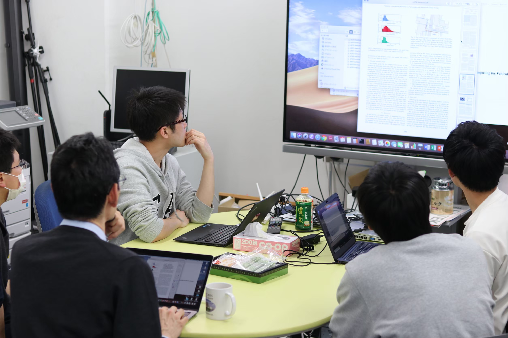

For B3
説明会日程（2024年度予定）
- 合同説明会：10月28日（月）
- 個別説明会：
10月31日（木） 18:15~ ＠DR3
11月4日（月） 18:15~ ＠DR7
11月12日（火） 18:15~ ＠DR7
説明会では重野先生や研究室のメンバーが, 研究テーマや研究室生活について説明します.
Contact
ご質問や相談がある場合は，下記連絡先までお知らせください．
B3担当者： b3-recruit--@--mos.ics.keio.ac.jp（※--@--を@に変えてください）
研究紹介
重野先生からのメッセージ
私が研究しているのは，コンピュータ・ネットワーク，モバイルコンピューティング， マルチメディアネットワークアプリケーションです．総称して「ユビキタス・マルチメディア・ネットワーク」と呼ぶことにしました．ブロードバンドやワイアレス通信であらゆるデバイスを結び，多様な特性を持つ情報を自由自在に，
そして安全に取り扱うことができるネットワーク，データ，映像，音声など複合的に利用した高度なメディア空間をネットワーク上で展開するアプリケーション － そんな未来のネットワークを目指して研究しています．
重野研では，ユビキタス・マルチメディア・ネットワークに関係する野心的なテーマに取り組んでいます．研究はテーマごとのグループにわかれて進めます．グループごとディスカッションを重ねて，最終的に個人ごとのテーマを設定して修論や卒論に取り組みます．研究成果は，豊かな発想と地道な努力，そして，熱いディスカッションから生まれます．
研究活動は研究室の中に留まりません．研究成果は論文や国内外の学会で発表してプロの研究者と議論を深めます．また，企業と共同で研究を進めたり，研究室のイベントに企業の方がとび入り参加されたりすることもあります．研究に限らずさまざまなイベントと通して，多くの人と交流することができるのも研究室の大きな特徴と言えるでしょう．
ユビキタス・マルチメディア・ネットワークの分野に興味のある方で，重野研を一緒に作る中核メンバーとして活躍してくれる方を募集します．いま優秀である必要はありませんが，修士に進学して３年後に優秀になるポテンシャルがある，そして何かに主体的に取り組むことのできる方を希望します．重野研究室に興味がある方はいつでも遊びに来てください．皆さんにも，すばらしい出会いがありますように．
重野 寛
年間の主なイベント（2024年度）
１月：班決め
２月：追いコン
まだ誰が誰だか覚えていないころ，M2の方々の追いコンが行われます．
３〜４月：研修・洋書輪講
新B4に対して，約２ヶ月間研修を行います!ネットワークやプログラミングの基礎知識を確認します．
年によって異なりますが，ネットワークの本を読んだり，PC組み立てを行ってもらいます．５月:ソフトボール大会
重野研にはスポーツ好きが多く，やる気いっぱいです！もちろん応援に徹するのもOKです！６〜７月：輪講準備・発表
論文を読んでネットワークグループの教授の前で発表します．８月：夏合宿
夏のBIGイベント．発表が終われば遊べます．１１月：フットサル
情報工学科の大会です．研究生活による運動不足を解消！１２月:テクノモール，忘年会
外部に自分たちの研究を発表します．１月:卒論発表
1年間の集大成！グループの先輩が手厚くサポートしてくれるはず．
ディスカッション
夏合宿（他大学と合同）